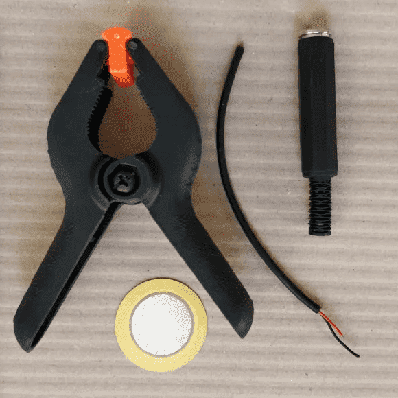

Audio HackLab
Audio HackLab, established in 2014, is a vibrant collective located in Turin, Italy. We bring together sound, technology, and community, resulting in a rich tapestry of creative and collaborative projects. Feel free to explore the original Audio HackLab website for more information!
Interactive sound installations
We created immersive sound environments, engaging audiences in unique auditory experiences. Utilizing open-source software and hardware, we developed installations that were accessible and customizable.
Workshops
Audio HackLab offered hands-on workshops covering sound synthesis, electronic music production, and DIY instrument building. We promoted knowledge sharing and skill development in audio engineering and sound art.
Collaborative projects
Partnering with artists, musicians, and technologists, we pushed the boundaries of traditional sound
art. Community involvement and collective creativity were encouraged through open calls.
We also organized collaborative events with live performances, showcasing experimental sound and
emerging
artists.